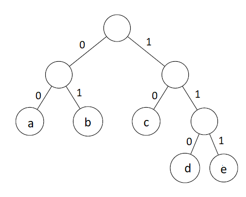

Home Week-6 Week-8
PDSA - Week 7
PDSA - Week 7Balanced search tree (AVL Tree)Greedy AlgorithmInterval schedulingMinimize latenessHuffman Algorithm
Balanced search tree (AVL Tree)
Binary search tree
- find(), insert() and delete() all walk down a single path
- Worst-case: height of the tree An unbalanced tree with n nodes may have height
AVL Tree
- Balanced trees have height
- Using rotations, we can maintain height balance
- Height balanced trees have height
- find(), insert() and delete() all walk down a single path, take time
- Minimum number of node
- Maximum number of nodes
Example for creation of AVL Tree
Implementation
x
1class AVLTree:2 # Constructor:3 def __init__(self,initval=None):4 self.value = initval5 if self.value:6 self.left = AVLTree()7 self.right = AVLTree()8 self.height = 19 else:10 self.left = None11 self.right = None12 self.height = 013 return14
15 def isempty(self):16 return (self.value == None)17
18 def isleaf(self):19 return (self.value != None and self.left.isempty() and self.right.isempty())20
21 def leftrotate(self):22 v = self.value23 vr = self.right.value24 tl = self.left25 trl = self.right.left26 trr = self.right.right27 newleft = AVLTree(v)28 newleft.left = tl29 newleft.right = trl30 self.value = vr31 self.right = trr32 self.left = newleft33 return34
35 def rightrotate(self):36 v = self.value37 vl = self.left.value38 tll = self.left.left39 tlr = self.left.right40 tr = self.right41 newright = AVLTree(v)42 newright.left = tlr43 newright.right = tr44 self.right = newright45 self.value = vl46 self.left = tll47 return48
49
50 def insert(self,v):51 if self.isempty():52 self.value = v53 self.left = AVLTree()54 self.right = AVLTree()55 self.height = 156 return 57 if self.value == v:58 return 59 if v < self.value:60 self.left.insert(v)61 self.rebalance()62 self.height = 1 + max(self.left.height, self.right.height) 63 if v > self.value:64 self.right.insert(v)65 self.rebalance() 66 self.height = 1 + max(self.left.height, self.right.height) 67 68 def rebalance(self):69 if self.left == None:70 hl = 071 else:72 hl = self.left.height73 if self.right == None:74 hr = 075 else:76 hr = self.right.height 77 if hl - hr > 1:78 if self.left.left.height > self.left.right.height:79 self.rightrotate()80 if self.left.left.height < self.left.right.height:81 self.left.leftrotate()82 self.rightrotate()83 self.updateheight() 84 if hl - hr < -1:85 if self.right.left.height < self.right.right.height:86 self.leftrotate()87 if self.right.left.height > self.right.right.height:88 self.right.rightrotate()89 self.leftrotate()90 self.updateheight()91 92 def updateheight(self):93 if self.isempty():94 return95 else:96 self.left.updateheight()97 self.right.updateheight()98 self.height = 1 + max(self.left.height, self.right.height) 99 100 101 def inorder(self):102 if self.isempty():103 return([])104 else:105 return(self.left.inorder()+ [self.value]+ self.right.inorder())106 def preorder(self):107 if self.isempty():108 return([])109 else:110 return([self.value] + self.left.preorder()+ self.right.preorder())111 def postorder(self):112 if self.isempty():113 return([])114 else:115 return(self.left.postorder()+ self.right.postorder() + [self.value])116
117A = AVLTree()118nodes = eval(input())119for i in nodes:120 A.insert(i)121
122print(A.inorder())123print(A.preorder())124print(A.postorder())Sample Input
xxxxxxxxxx11[1,2,3,4,5,6,7] #order of insertionOutput
xxxxxxxxxx31[1, 2, 3, 4, 5, 6, 7] #inorder traversal2[4, 2, 1, 3, 6, 5, 7] #preorder traversal3[1, 3, 2, 5, 7, 6, 4] #postorder traveral
Greedy Algorithm
Need to make a sequence of choices to achieve a global optimum
At each stage, make the next choice based on some local criterion
Never go back and revise an earlier decision
Drastically reduces space to search for solutions
Greedy strategy needs a proof of optimality
Example :
- Dijkstra's
- Prim's
- Kruskal's
- Interval scheduling
- Minimize lateness
- Huffman coding
Interval scheduling
Scenario example
▪ IIT Madras has a special video classroom for delivering online lectures
▪ Different teachers want to book the classroom
▪ Slots may overlap, so not all bookings can be honored
▪ Choose a subset of bookings to maximize the number of teachers who get to use the room
Algorithm
- Sort all jobs which based on end time in increasing order.
- Take the interval which has earliest finish time.
- Repeat next two steps till you process all jobs.
- Eliminate all intervals which have start time less than selected interval’s end time.
- If interval has start time greater than current interval’s end time, at it to set. Set current interval to new interval.
Implementation
xxxxxxxxxx211def tuplesort(L, index):2 L_ = []3 for t in L:4 L_.append(t[index:index+1] + t[:index] + t[index+1:])5 L_.sort()6
7 L__ = []8 for t in L_:9 L__.append(t[1:index+1] + t[0:1] + t[index+1:])10 return L__11
12def intervalschedule(L):13 sortedL = tuplesort(L, 2)14 accepted = [sortedL[0][0]]15 for i, s, f in sortedL[1:]:16 if s > L[accepted[-1]][2]:17 accepted.append(i)18 return accepted19#(job id,start time, finish time) in each tuple of list L20L = [(0, 1, 2),(1, 1, 3),(2, 1, 5),(3, 3, 4),(4, 4, 5),(5, 5, 8),(6, 7, 9),(7, 10, 13),(8, 11, 12)]21print(len(intervalschedule(L)))Output
xxxxxxxxxx114Analysis
- Initially, sort n bookings by finish time —
- Single scan,
- overall
Example
In the table below, we have 8 activities with the corresponding start and finish times, It might not be possible to complete all the activities since their time frame can conflict. For example, if any activity starts at time 0 and finishes at time 4, then other activities can not start before 4. It can be started at 4 or afterwards.
What is the maximum number of activities which can be performed without conflict?
| Activity | Start time | Finish time |
|---|---|---|
| A | 1 | 2 |
| B | 3 | 4 |
| C | 0 | 6 |
| D | 1 | 4 |
| E | 4 | 5 |
| F | 5 | 9 |
| G | 9 | 11 |
| H | 8 | 10 |
Answer
5
Minimize lateness
Scenario example
▪ IIT Madras has a single 3D printer
▪ A number of users need to use this printer
▪ Each user will get access to the printer, but may not finish before deadline
▪ Goal is to minimize the lateness
Algorithm
Sort all job in ascending order of deadlines
Start with time t = 0
For each job in the list
- Schedule the job at time t
- Finish time = t + processing time of job
- t = finish time
Return (start time, finish time) for each job
Implementation
xxxxxxxxxx261from operator import itemgetter2 3def minimize_lateness(jobs):4 schedule =[]5 max_lateness = 06 t = 07 8 sorted_jobs = sorted(jobs,key=itemgetter(2))9 10 for job in sorted_jobs:11 job_start_time = t12 job_finish_time = t + job[1]13 14 t = job_finish_time15 if(job_finish_time > job[2]):16 max_lateness = max (max_lateness, (job_finish_time - job[2]))17 schedule.append((job[0],job_start_time, job_finish_time))18 19 return max_lateness, schedule20 21jobs = [(1, 3, 6), (2, 2, 9), (3, 1, 8), (4, 4, 9), (5, 3, 14), (6, 2, 15)]22max_lateness, sc = minimize_lateness(jobs)23print ("Maximum lateness is :" + str(max_lateness))24for t in sc:25 print ('JobId= {0}, start time= {1}, finish time= {2}'.format(t[0],t[1],t[2]))26
Output
xxxxxxxxxx71Maximum lateness is :12JobId= 1, start time= 0, finish time= 33JobId= 3, start time= 3, finish time= 44JobId= 2, start time= 4, finish time= 65JobId= 4, start time= 6, finish time= 106JobId= 5, start time= 10, finish time= 137JobId= 6, start time= 13, finish time= 15Analysis
- Sort the requests by D(i) —
- Read all schedule in sorted order —
- overall
Huffman Algorithm
Algorithm
- Calculate the frequency of each character in the string.
- Sort the characters in increasing order of the frequency.
- Make each unique character as a leaf node.
- Create an empty node z. Assign the minimum frequency to the left child of z and assign the second minimum frequency to the right child of z. Set the value of the z as the sum of the above two minimum frequencies.
- Remove these two minimum frequencies from Q and add the sum into the list of frequencies.
- Insert node z into the tree.
- Repeat steps 3 to 5 for all the characters.
- For each non-leaf node, assign 0 to the left edge and 1 to the right edge.
Example

Implementation
xxxxxxxxxx481
2class Node:3 def __init__(self,frequency,symbol = None,left = None,right = None):4 self.frequency = frequency5 self.symbol = symbol6 self.left = left7 self.right = right8
9# Solution 10 11def Huffman(s):12 huffcode = {}13 char = list(s)14 freqlist = []15 unique_char = set(char)16 for c in unique_char:17 freqlist.append((char.count(c),c))18 nodes = []19 for nd in sorted(freqlist):20 nodes.append((nd,Node(nd[0],nd[1])))21 while len(nodes) > 1:22 nodes.sort()23 L = nodes[0][1]24 R = nodes[1][1]25 newnode = Node(L.frequency + R.frequency, L.symbol + R.symbol,L,R)26 nodes.pop(0)27 nodes.pop(0)28 nodes.append(((L.frequency + R.frequency, L.symbol + R.symbol),newnode))29
30 for ch in unique_char:31 temp = newnode32 code = ''33 while ch != temp.symbol: 34 if ch in temp.left.symbol:35 code += '0'36 temp = temp.left37 else:38 code += '1'39 temp = temp.right40 huffcode[ch] = code 41 return huffcode42
43
44
45s = 'abbcaaaabbcdddeee'46res = Huffman(s)47for char in sorted(res):48 print(char,res[char])Output
xxxxxxxxxx51a 102b 013c 1104d 1115e 00
Huffman Implementation using Min Heap
Contribute by:- Jivitesh Sabharwal
xxxxxxxxxx931class min_heap:2 def __init__(self,nodes):3 self.nodes = nodes4 self.size =len(nodes)5 self.create_min_heap()6 7 def isempty(self):8 return len(self.nodes) == 09 10 def min_heapify(self,s):11 l = 2*s + 112 r = 2*s + 213 small = s14 if l<self.size and self.nodes[l][0][0] < self.nodes[small][0][0]:15 small = l16 if r<self.size and self.nodes[r][0][0] < self.nodes[small][0][0]:17 small = r18 if small != s:19 self.nodes[small],self.nodes[s] = self.nodes[s],self.nodes[small]20 self.min_heapify(small)21
22 def create_min_heap(self):23 for i in range((self.size//2)-1,-1,-1):24 self.min_heapify(i)25 26 def insert_min(self,v):27 self.nodes.append(v)28 self.size += 129 index = self.size -130 while(index > 0):31 parent = (index-1)//232 if self.nodes[parent][0][0] > self.nodes[index][0][0]:33 self.nodes[parent],self.nodes[index] = self.nodes[index],self.nodes[parent]34 index = parent35 else:36 break37 pass38 39 def del_minheap(self):40 item = None41 if self.isempty():42 return item43 self.nodes[0],self.nodes[-1] = self.nodes[-1],self.nodes[0]44 item = self.nodes.pop()45 self.size -= 146 self.min_heapify(0)47 return item48
49class Node:50 def __init__(self,frequency,symbol = None,left = None,right=None):51 self.frequency = frequency52 self.symbol = symbol53 self.left = left54 self.right = right55
56def Huffman(s):57 freqlist = []58 huffcode = {}59 char = list(s)60 unique_char = set(char)61 for c in unique_char:62 freqlist.append((char.count(c),c))63 nodes = []64 for nd in sorted(freqlist):65 nodes.append((nd,(Node(nd[0],nd[1]))))66 minheap_nodes = min_heap(nodes)67
68 while(minheap_nodes.size > 1):69 70 L = minheap_nodes.del_minheap()[1]71 R = minheap_nodes.del_minheap()[1]72 newnode = Node(L.frequency+R.frequency,L.symbol+R.symbol,L,R)73 internal_node = tuple(((L.frequency+R.frequency,L.symbol+R.symbol),newnode))74 minheap_nodes.insert_min(internal_node)75
76 for ch in unique_char:77 temp = newnode78 code = ''79 while ch!=temp.symbol:80 if ch in temp.left.symbol:81 code += '0'82 temp = temp.left83 else:84 code+= '1'85 temp = temp.right86 huffcode[ch] = code87 return huffcode 88
89
90s = 'abbcaaaabbcdddeee'91res = Huffman(s)92for char in sorted(res):93 print(char,res[char])Output
xxxxxxxxxx51a 102b 013c 1104d 1115e 00
Analysis
- At each recursive step, extract letters with minimum frequency and replace by composite letter with combined frequency
- Store frequencies in an array
- Linear scan to find minimum values
- Complexity is
- Instead, maintain frequencies in an heap
- Extracting two minimum frequency letters and adding back compound letter are both
- Complexity drops to